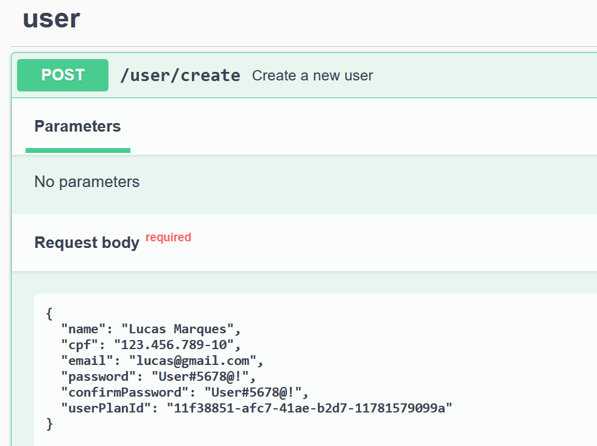
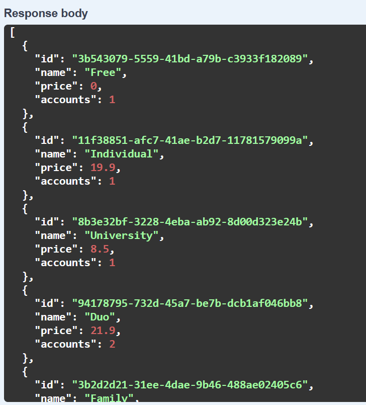
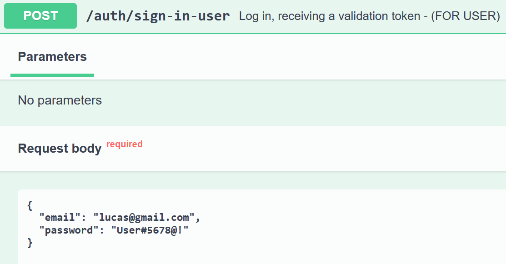
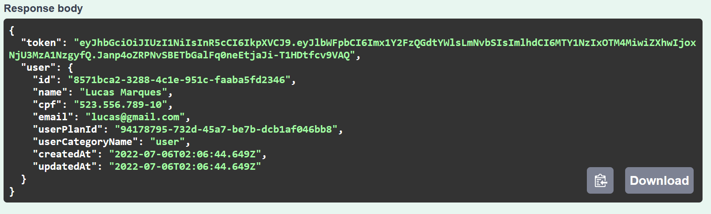
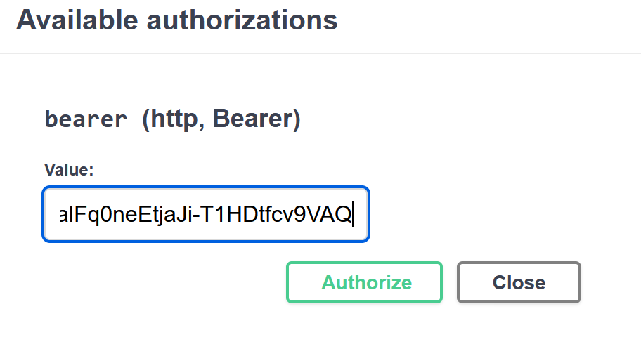

Primeiramente comece criando um novo usuário para acessar a plataforma. Vá até 'user', e selecione a rota '/user/create' para informar os dados do usuário. Preencha todos os campos com dados válidos. Em 'userPlanId' você precisará informar um 'ID' de algum plano de usuário (os planos servem para limitar o uso de algumas funcionalidades da plataforma).

Vá até 'userPlanId' execute a rota GET '/user-plan', assim buscará todos os planos de usuário disponível. Então selecione, copie o 'ID' de algum plano e insira no campo 'userPlanId'. Execute a rota 'user/create' com todos os dados preenchidos.

Após criar um usuário é hora de fazer login. Insira seu email e senha.

Selecione e copie apenas o 'TOKEN', nele contém os dados do usuário criptografados.

Após copiar o 'TOKEN', vá até 'Authorize' no início da página. Agora cole seu token no campo 'Value' e clique em 'Authorize'. Agora você já está autenticado para continuar acessando as outras rotas da plataforma.
